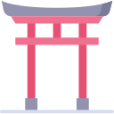
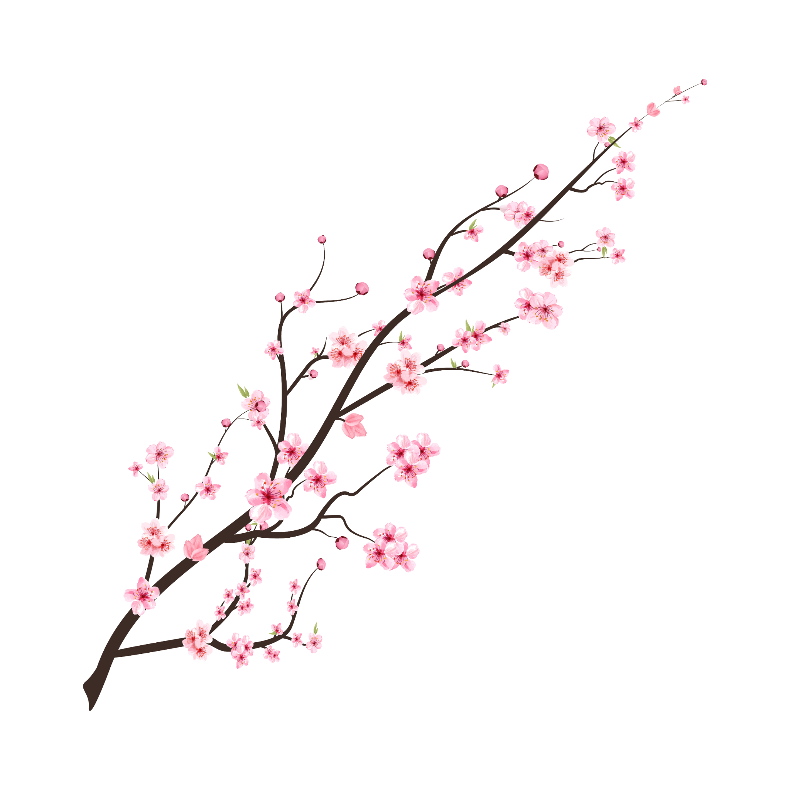
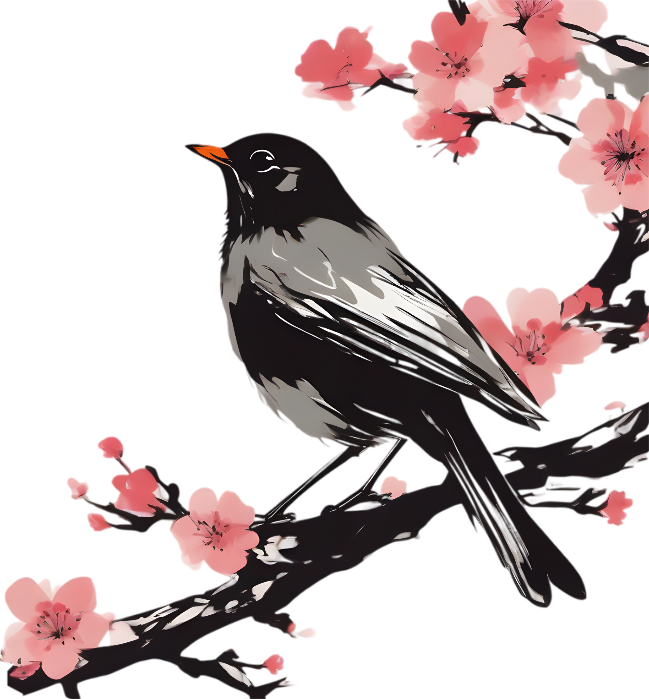
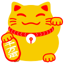
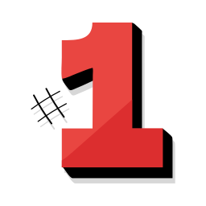
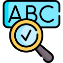
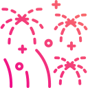

Official Home
Explains what TASEWAKAI is, who runs it, and where people can join safely.
TASEWAKAI 会
pre-alpha 0.5 loading economy...

日本語 × Gaming × Culture × Community
An international Discord community for Japanese learning, gaming, cultural exchange, creative projects, and real community moments.

にゃ〜
Community spotlight
The official chaos spark of TASEWAKAI. Certified community mood booster.
About the server
TASEWAKAI is a community project founded by Kazu. It was created for people who want to learn Japanese through real social interaction, not only through textbooks.
The server combines Japanese learning, gaming, culture, content creation, events, and international friendships. It feels like a community hub rather than a strict classroom.
About this website

Explains what TASEWAKAI is, who runs it, and where people can join safely.
Visitors can quickly see who to contact and what they can do on the site.
Learning tools now reward local YEN, EXP, streaks, and level progress.

Kana, JLPT words, and kanji trainers help new learners start practicing.

Petals, fireworks, shrine visuals, and smooth motion create a Japanese mood.
The website is being built like a real project with versions, patches, and playful experiments.
People behind the project
Founder & Community Director
Kazu is the founder of TASEWAKAI and the main person behind the server direction, systems, growth, identity, content, and collaborations.
Kazu's SteamProject Helper & Japanese Support
Satoshi is calm, friendly, reliable, enjoys gaming, has strong Japanese ability, and supports the server with ideas and cultural knowledge.
Staff Member & Content Collaborator
Arthur is encouraging, positive, and kind. He supports staff work, joins content collaboration, and brings friendly energy.
Moderator & Creative Helper
David is a serious and dependable moderator with experience in Steam Workshop modding and graphic design.
Official links
Join the community, meet people, practice Japanese, and become part of the road to 1000 members.
 Join TASEWAKAI
Join TASEWAKAIWebsite guide
Start with the community story, train Japanese, earn local YEN, or contact staff when you need help.
YEN store
Buy small Japanese food items with the YEN earned from Kana and JLPT practice.
Owned snacks
Learning tool
Practice kana and earn local YEN + EXP. One name can be used, and it can only be changed once per week.
Kana Trainer
Choose the correct reading.
Pick an answer to begin.
Need help?
If something happens in the Discord server and you are not sure who to contact, use this list.
Discord: kazu.kaiDiscord: satoshi______Discord: arturio8949Discord: miku_fravery. Open Discord